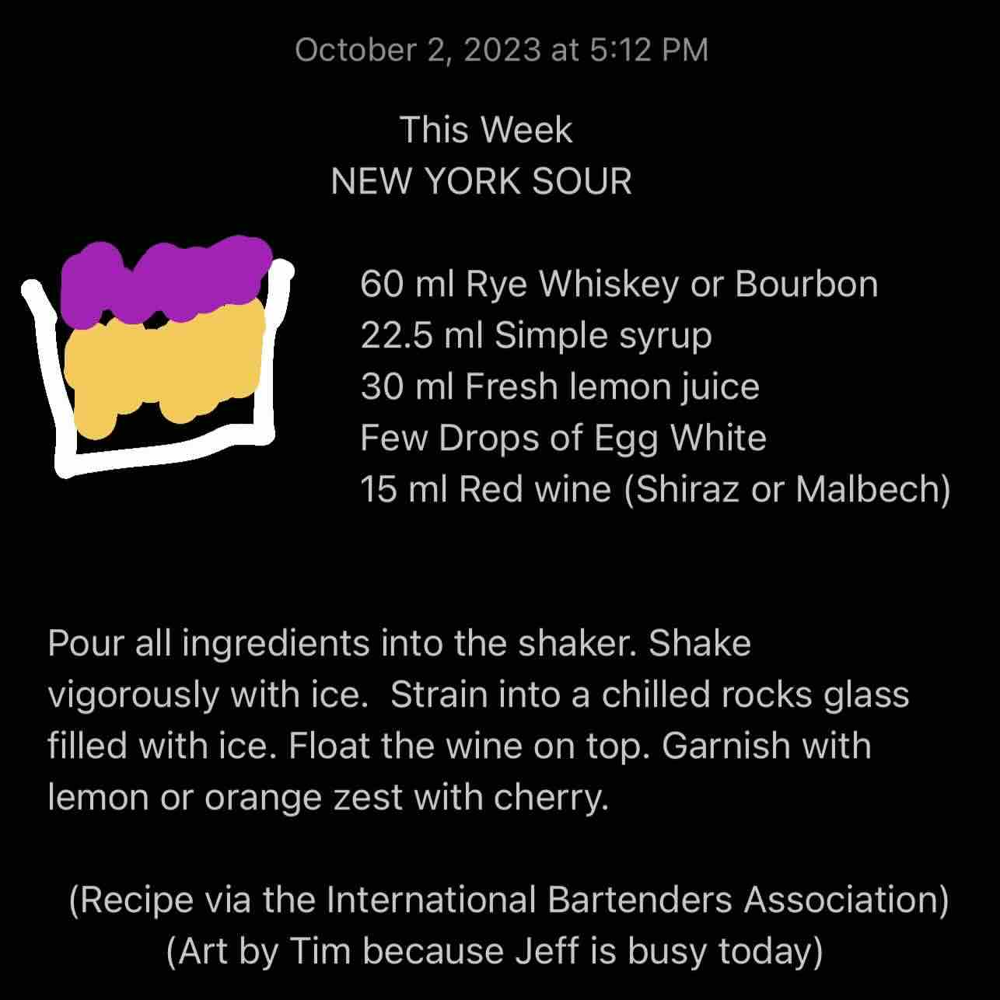

New York Sour
Ingredients
- Rye Whiskey or Bourbon (2oz/60ml)
- Simple Syrup (.76oz/22.5ml)
- Fresh Lemon Juice (1oz/30ml)
- Egg White (few drops)
- Red Wine (.5oz/15ml)
Steps
- Pour all ingredients into the shaker.
- Shake vigorously with ice.
- Strain into a chilled rocks glass filled with ice.
- Float the wine on top.
- Garnish with lemon or orange zest with cherry.
Notes